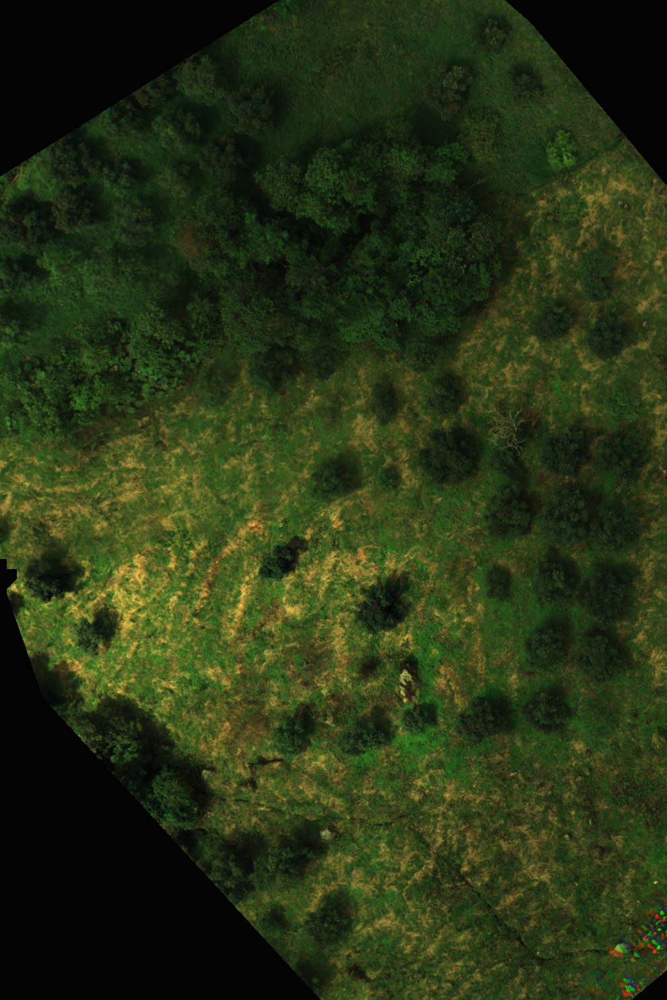
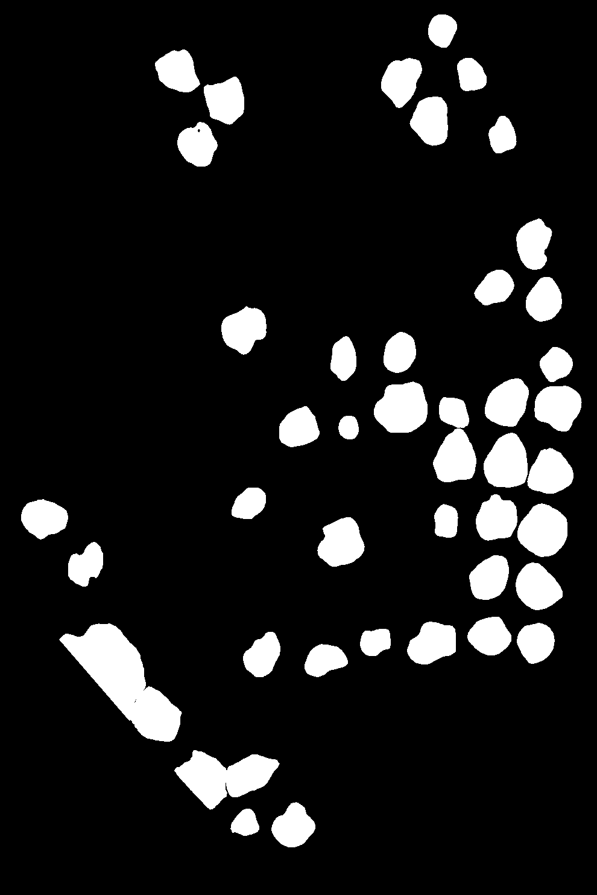
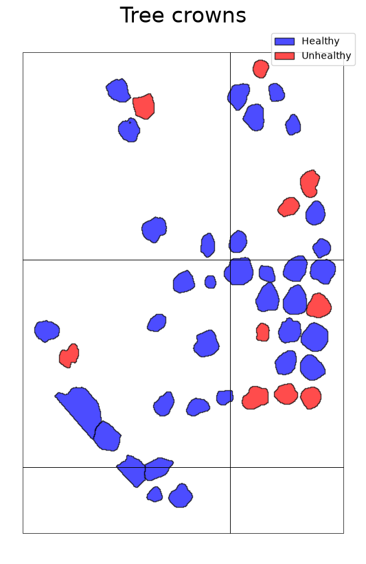

Image analysis pipeline to assess crop health
See an example of my GIS tools proficiency below. Pilot project on avocado cropland
The type of data to work with
When working with remotely sensed data, contextual information on cropland, soil conditions, and weather patterns is essential for accurate yield forecasting. Aerial imaging presents a unique opportunity to capture high-resolution data on crop health, growth stages, and potential stressors.
Aim of this tool
This projects aims to provide a screening test to identify hubs of stressed trees within an avocado cropland.Use example
For a given plot, idenify crop trees. Notice how crop trees in the original picture (left) are correctly identified, whereas trees belonging to a protected area surrounding the cropland are not. This is a crucial step to avoid false positives in the analysis of crop health. Meta's DeepForest model was used to identify trees in the original image. Then, a mask was created to filter out trees that are not part of the cropland. Unhealthy trees were previously identified through field surveys. Orthomosaics like this will later be tiled, such as presented on the right-hand picture.


--